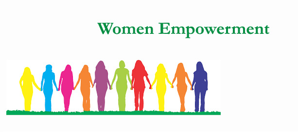

Women's empowerment may be defined in several ways, including accepting women's viewpoints or making an effort to seek them, raising the status of women through education, awareness, literacy, and training. Women's empowerment equips and allows women to make life-determining decisions through the different problems in society. They may have the opportunity to redefine gender roles or other such roles, which in turn may allow them more freedom to pursue desired goals.
Women's empowerment has become a significant topic of discussion in development and economics. Economic empowerment allows women to control and benefit from resources, assets, and income. It also aids the ability to manage risk and improve women's well-being. It can result in approaches to support trivialized genders in a particular political or social context. While often interchangeably used, the more comprehensive concept of gender empowerment concerns people of any gender, stressing the distinction between biological and gender as a role. Women empowerment helps in boosting the status of women through literacy, education, training and awareness creation. Furthermore, women's empowerment refers to women's ability to make strategic life choices which had been previously denied them.